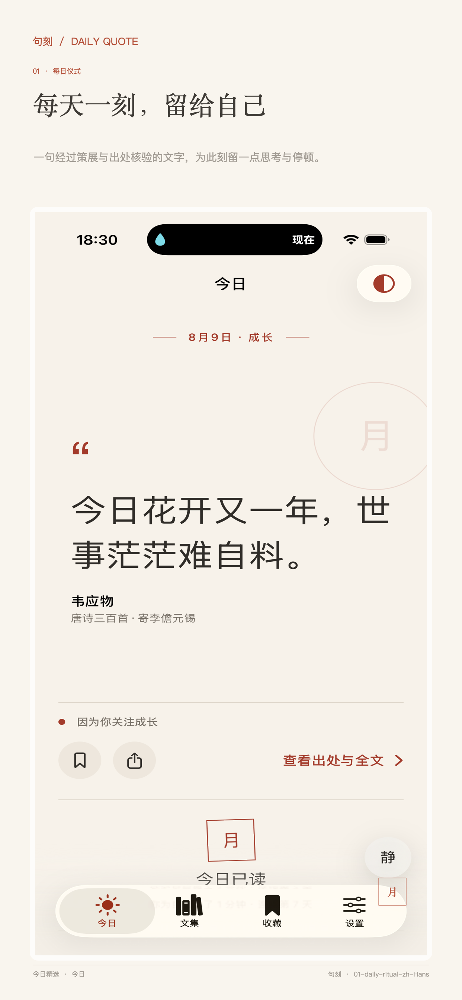
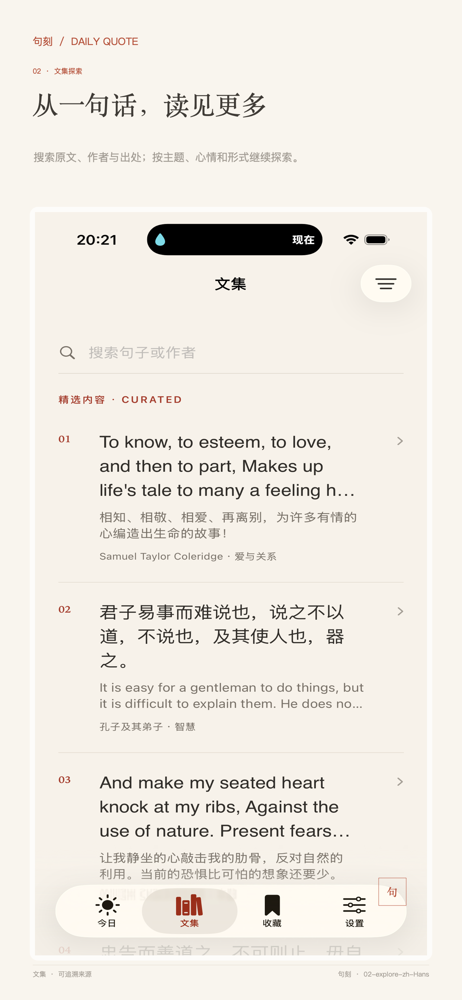
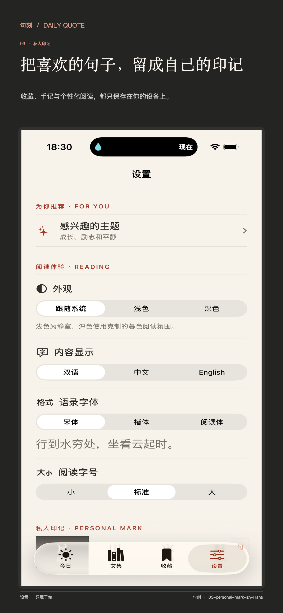

Daily Quote · 每日名言
给此刻的自己，
一句话。
从你关心的主题与当下心情出发，读一句值得停留的话。收藏、写下感受，或把它做成只属于你的分享卡片。
iOS 1.0 · 审核中
- 中英双语内容
- 无需账号
- 默认本地保存

The daily ritual
不是信息流，也不催你读得更多。
只是每天，为你留下一次安静的停顿。

01 Read at your rhythm
从每日相遇，
走进一座文集。
首次打开时选择感兴趣的主题，句刻会据此安排每日内容；也可以按主题、心情和形式搜索文集，让平静、勇气或重新开始回应此刻。
- 中英双语、可靠出处与项目译文
- 主题、心情、形式筛选与全文搜索
- 收藏、手记与可追溯阅读历史

02 Made to be kept
把一句话，
变成你的纸上印记。
选择纸张、字体、比例与月、山、水、叶的私人印记。完成后复制文字，或把高清卡片保存、分享给重要的人。
留白
暮色
笺册

03 A ritual of your own
阅读的样子，
也由你决定。
跟随系统外观，选择内容语言、阅读字号、提醒时刻与私人印记。小组件把今天的一句留在主屏幕和锁定屏幕，安静等待你回来。
- 外观、语言、字体与字号
- 个人印记、每日提醒与小组件
- 动态字体、VoiceOver 与减弱动态效果
句刻 Plus
把一次停留，
慢慢读成自己的生活。
Plus 为愿意继续深入的人打开更多创作、专题与回顾能力；每天一句的基础阅读始终保持安静、完整。
- 01
更自由的分享创作
编辑布局、纸张、字体、比例与印记，保存自己的模板并高清导出。
- 02
专题与深度阅读
阅读主题合集、保存进度与离线内容；按次同意后获得 AI 解读与阅读问题。
- 03
更贴近你的日常
高级小组件、双语朗读、年度回顾，以及可选的 iCloud 私有同步。
Plus 订阅将在 App 审核通过后通过 Apple App Store 提供；价格与可用性以 App 内显示为准。
Local by design
越懂你，
越应该尊重你。
句刻不要求账号，不接入广告、第三方分析或追踪 SDK。兴趣主题、收藏、手记、私人印记和提醒设置默认只保存在设备本地；需要联网的能力会清楚说明用途与下一步。
阅读完整隐私政策